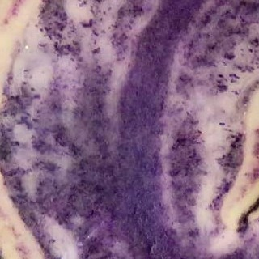

Una fructa hay en aquella tierra por donde anduvo el mariscal don Diego de Almagro, de la otra parte del
Cuzco, que la produce de sí mesma la tierra; e son como ajes, redondos e tan gruesos como el puño, e llámanlos papas, e quieren
parescer turmas de tierra.

Otras muchas legumbres se crian debaxo de la tierra, que los indios siembran y les sirven de mantenimiento,
principalmente en las provincias estériles de cara [maíz). Tiene el primer lugar la que llaman papa, que les sirve de pan;
cómenla cozida y assada, y también la echan en los guisados; passada al yelo y al sol para que se conserve, como en otra parte
diximos, se llama chuñu.

Hacia la parte de Mediodía desta dicha ciudad hay muy gran cantidad de tierras llanas pobladas de indios,
como adelante se dirá, en las cuales se siembran papas por el mes de otubre, porques necesario questén maduras en todo el mes
de marzo, porque los hielos le hacen daño, y se vienen a coger por el mes de mayo; las cuales se echan en unas parvas o almijares
de paja en el suelo y allí tendidas las secan y pasan al sol y al hielo, y desta manera hacen un género de mantenimiento que se
llama chuño, que quiere decir "cosa seca y pasada", y esto, cosido en agua, se come y les sirve de pan; y también hacen con él
otros potajes, con lo cual se sustentan todos los indios con mucha hartura.

Cómense también las papas así frescas. cocidas o asadas, y de un género de ellas más apacible que se da
también en lugares calientes, hacen cierto guisado o cazuela que llaman locro.
Casi en todo este reino del Perú cogen los indios ciertas raíces llamadas papas, que les sirven de pan,
las cuales se cuecen en una hora poco más o menos: este tiempo, pues, que se tardan en cocer las papas toman para medir
la duración de las cosas que se hacen en breve, respondiendo haber gastado en hacer tal o tal cosa tanto tiempo cuanto
basta a cocerse una olla de papas; y esto es lo que alcanzó esta gente de los tiempos y la cuenta y orden que en ellos tenían.

Muchas rayces se yban de dia en dia descubriendo nutritibas suaues, y comestibles, mas de una goza tierra
fria y serrana, que entre las de el Mundo se deue dar el lugar primero á esta llaman los naturales de el Cuzco Papas, y en el
nuebo Reyno de Granada la llamaron nuestros Españoles Turmas por la mucha semejanza que tienen á las Turmas de tierra que se
allan en España es de tanta importancia esta raiz en lo alto serrano de nuestro Piru como es nuestra España el trigo y ese llaman
por aca año de hambre que la cosecha de las Papas, es falta y esteril...